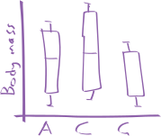

Show how to install the palmerpenguins package
install.packages("palmerpenguins")
library(palmerpenguins)Exercise 2
In this exercise, we will use descriptive statistics to describe datasets. We will also make some figures of the data. You can do everything using the R code blocks on the page. If you want to, you can also try run the code on your computer, but we will do that properly in the next exercise.
The palmerpenguins dataset contains data about some penguins. From the data website:
Data were collected and made available by Dr. Kristen Gorman and the Palmer Station, Antarctica LTER, a member of the Long Term Ecological Research Network.
I won’t say more about the dataset, as we are going to explore it as part of this exercise.
The data has already been loaded into the R environment, but if you wanted to follow along on your own computer, you can load it by first installing the palmerpenguins package, and then loading the dataset.
palmerpenguins packageinstall.packages("palmerpenguins")
library(palmerpenguins)We are also going to use the tidyverse set of R packages for this exercise. They have also already been loaded, but as usual if you wanted to run this on your own computer, you would have to install and load the tidyverse package too.
tidyverse packageinstall.packages("tidyverse")
library(palmerpenguins)Ok, let’s get started.
First, we want to see what is in our dataset, which is an object named penguins. We can do that very easily, by simply calling it in R:
Once you click the “Run code” button, R will print the contents of penguins. Some objects have special behaviours when they are printed. This is one of those cases. Let me explain:
tibble. Tibbles are dataframes that are printed in a special way (they do some other things, but they’re not relevant here). They come from the tibble R package, which is installed with the tidyverse package.344) and number of columns (8).ℹ symbol:
ℹ tells us how many rows are not being shown here. Since by default 10 are shown, \(344-10=334\).ℹ tells us how many columns (variables) are not being shown here, as there was not enough room to print them. The variables sex and year have not been printed (note this might change depending on your screen size and browser).What else can we see from this output?
body_mass_g appears to be a continuous measure of mass in grams, with no decimal places (probably due to the accuracy of the equipment used), while species is a nominal categorical variable, assigning the species of penguin.NA (not applicable). This is the symbol R used for no data present. For example, the fourth row shows a penguin that has NA recorded for all the measurements, but its species and island were recorded (maybe it got loose before it could be measured?). We will encounter NA a lot in this course, as it is a feature of real data sets, and therefore you need to know how to deal with them. For now, lets just acknowledge that it is there.Next, use the glimpse() function to print the dataframe in a different way.
glimpse() transposes the dataframe, with columns now running down the page. This view means we can see all the variables. Again usually we would see the variable type, but the webR bug prevents this.
To get around that, we can temporarily use the following command (don’t worry about what this does for now, as glimpse() will work normally on your computers):
To see the number of categories in a factor column (or any other sort of variable actually), we can use the n_distinct() function in a similar way:
The above output tells us that there are 3 distinct values in the species column, and also in the sex and year column. An important thing to remember here is that NA values will be treated like a distinct value.
Now we can see all the data types and the number of unique values. Recall the R definitions from the previous exercise:
- Numeric: Represents numbers and can be either integers or floating-point numbers. For example,
42and3.14are numeric values.- Character: Represents text or string data. Character values are enclosed in quotes, such as
"Hello, world!".- Logical: Represents boolean values, which can be either
TRUEorFALSE.- Factor: Used to represent categorical data. Factors are useful for storing data that has a fixed number of unique values, such as “Species A” and “Species B” for species ID.
From the information we have found so far, can you assign a variable type to each of the columns? A reminder from the lecture:
- Categorical variables have a fixed number of discrete values
- The measurement we take will assign our data to a specific value
- E.g., species (Ischnura elegans, Lestes sponsa, Coenagrion hastulatum)
- Can be either nominal or ordinal:
- Nominal variables do not have inherent order (e.g., species)
- Ordinal variables do have an inherent order (e.g., “low”, “medium” or > “high” elevation)
- Quantitative variables are represented by numbers that reflect a magnitude
- Unlike categorical variables, the numbers we collect mean something tangible
- Can be either discrete or continuous:
- Discrete variables can only take certain values (e.g., a count of species must a natural number (1, 2, 3, etc), not 1.55)
- Continuous variales can take any real number (a number that can be represented by a decimal) within some range. (e.g., height in mm, temperature in °C)
Discuss the answers with your neighbour to see if you agree.
I don’t know about you, but I would struggle to get a good feeling for over 300 rows of data by simply looking at it printed out. To help us understand the dataset better, we are going to make some simple plots.
R has a built in method to make plots, but we will avoid it in this course. Instead we will use ggplot2, a plotting package that is installed with tidyverse. ggplot2 provides a clear and simple way to customise your plots. It is based in a data visualisation theory known as the grammer of graphics (gg) (Wilkinson 2013).
Plotting at its most basic allows us to explore patterns in a dataset, such as looking for outlier and potential mistakes, visualising the distribution of individual variables and relationships betwee variables. Making good graphics/plots/figures (I will use these interchangably) is a bit of an art. We will touch on some best practises throughout this course.
The grammer of graphics gives us a way to describe any plot. ggplot2 then allows us to make that plot, using a layered approach to the grammer of graphics.
Using this approach, we can say a statistical graphic is a mapping of data variables to aesthetic attributes of geometric objects (Chester et al. 2025).
Wow. What does that mean? Let’s break it down.
A ggplot2 plot has three essential components:
data: the dataset that contains the variables you want to plotgeom: the geometric object you want to use to display your data (e.g. a point, a line, a bar).aes: aesthetic attributes that you want to map to your geometric object. For example, the x and y location of a point geometry could be mapped to two variables in your dataset, and the colour of those points could be mapped to a third.As I said before, ggplot2 uses a layered approach to the grammer of graphics. This makes it very easy to start contructing plots by putting together a “recipe” step-by-step. Let’s walk through an example.
We want to make a scatterplot that shows the relationship between body_mass_g and bill_length_mm. Imagine we are interested to see if bigger penguins also have bigger bills? (We will do correlation analysis later on in the course, this is just a nice example for learning ggplot2).
Let’s map out what we need to describe that plot:
data is the penguins dataset, as that is where the body_mass_g and bill_length_mm variables are.geom we are going to represent the data using a point, as we are making a scatter plot.aes is how we describe where each point should be. For this example, we could map the x (horizontal position) of the point to body_mass_g and the y position (vertical position) to bill_length_mm.So now we have the recipe, let’s start building layer by layer. First we will add the data by providing it to the ggplot() function as an argument. Try running this!
Wow, beautiful! But perhaps some things are missing. Let’s map our data. We use the aes() to tell R that everything inside it is going to be used as an aesthetic mapping, and that the names of the variables we mention come from the dataframe. We then provide that to ggplot()’s mapping argument, as shown:
Again, still not quite there. We need to actually show the data! We need to add some geometry. To do that we, use the + operator. While this is usually reserved for maths, ggplot2 hijacks it to add layers to a plot. We can add a point geometry like this (you might need to use the hoziontal scroll wheel to see the end of the first line):
1ggplot(data = penguins, mapping = aes(x = body_mass_g, y = bill_length_mm, colour = species)) +
geom_point()colour as a third aesthetic, mapped to species
Looking good! Notice you got a warning. The warning is important to pay attention to, as it is telling you that two rows (penguins) have not been plotted, as they contain missing values. These are the NA values we talked about earlier. Two penguins must have had an NA for at least one of our plotting variables, body_mass_g or bill_length_mm (as we need both to place the point).
Let’s add one more aesthetic to our data. Our dataset contained data for three different penguin species. Let’s map species to the colour of our points.
You need to modify the code above by adding a 3rd argument within the aes() function. In R, we seperate arguments within functions with a , as you can see between x = body_mass_g and y = bill_length_mm. Add another , then write colour = species. Then re-run the code.
You notice we now have a legend that tells us which colour is which species. ggplot2 has also chosen a default colour scheme for us.
Even though we have not covered correlations yet, do you think bigger penguins have longer bills? Does this relationship hold in all species? Why not explore other variables, by switching out the variables in the code above.
Let’s get back to understanding each of the variables. For continuous variables, a histogram is a good place to start, as it shows us the range and the shape of the distribution. To make a histogram with ggplot, we use geom_histogram() as our geometry. geom_histogram() is a bit of a special geom_, as it does all the calculations needed to make a histogram for us, such as binning our data and counting the number of bits of data in each bin. We also need to only provide an x aesthetic value, and the y value is calculated for us by geom_histogram().
ggplot(data = penguins, mapping = aes(x = body_mass_g)) +
geom_histogram()
1ggplot(data = penguins, mapping = aes(x = bill_length_mm)) +
geom_histogram()
ggplot(data = penguins, mapping = aes(x = bill_depth_mm)) +
geom_histogram()
ggplot(data = penguins, mapping = aes(x = flipper_length_mm)) +
geom_histogram()
ggplot(data = penguins, mapping = aes(x = body_mass_g)) +
geom_histogram()x with the variable you want to plot.
Notice we get the warning again, that data (NA values) have been removed.
Modify the above code to show the other continuous variables. Do they all look like bell-shaped (normal) distributions? Are any very different from a normal distribution (e.g., has more than one distinct peaks)? Can you think why this might be?
Now let’s look at our other variables. species and island and sex seem to be categorical nominal variables, each with three different categories. What about year? It’s integer data (1,2,3, etc) so that might suggest we should treat it like a quantitative discrete variable. But, it only has three levels across the entire dataset. This suggests to me that it instead is a categorical ordinal variable. It is the year the penguin was caught and measured. I think you could also make an arguement that this is not an ordinal variable, and instead is nominal. It would depend if you think penguins in 2007 are going to be more similar to penguins in 2008, than penguins in 2009 (maybe because of gradual changes in climate), or if you think any differences between years would be random (maybe some years are better or worse than others, but this is not predictable). Either way, we can also visualise it using the same method.
Let’s look at how much of our data comes from each category in each variable. To do that, we could use a bar chart. Like geom_histogram(), geom_bar() does some calculation for us. Specifically, it counts how many rows of data are assigned to each category, and then uses that for our y aesthetic.
# Part 1
ggplot(data = penguins, mapping = aes(x = species)) +
geom_bar()
1ggplot(data = penguins, mapping = aes(x = island)) +
geom_bar()
ggplot(data = penguins, mapping = aes(x = year)) +
geom_bar()
ggplot(data = penguins, mapping = aes(x = sex)) +
geom_bar()
# Part 2
2ggplot(data = penguins, mapping = aes(x = island, fill = species)) +
geom_bar()x with the variable you want to plot.
fill as an aesthetic, and map it to species.
As you did before, modify the code to make a bar chart for island, sex, and year.
Using what you learned to make the first plot, can you add another aesthetic to make a plot that shows what proportion of the penguins on each island are which species? Are all species present on all islands?
Hint: Instead of using colour, you might want to try fill. To understand why, try each one!
Finally for plotting today, we will make some box plots. Box plots allow us to visualize the distribution of a continuous variable and to compare distributions across different levels of a categorical variable. A box plot displays the median, quartiles, and potential outliers of the data.
To create a box plot in ggplot2, we use geom_boxplot(). Again, this is a very helpful geom_, as it does all of the required calculations (median, quartiles, etc) for us. Using what you have learned, try to create this boxplot yourself first (you can copy code from above and modify it). Create a box plot to compare the distribution of body_mass_g across different species. Think what variables should be assigned to which aesthetics. Use the sketch below as a guide.

We will now calculate some of the descriptive statistics we covered in the lecture.
There are a few function in R that will quickly give un an overview of our dataset. One of them is summary(), which when used on a dataframe, will provide some statistics about each variable in the dataframe:
Recall what quartiles (Qu.) are from the lecture. From this output, we can extract a number of descriptive statistics, including measures of central tendancy such as the mean, median, as well as measures of spread such as minimum, maximum and the 1st and 3rd quartiles, from which we could calculate the inter quartile range (\(\text{IQR} = Q_3 - Q_1\)).
Notice though that the outputs do not really make sense for year, since R is treating it as a quantitative variable, when we decided it should be a categorical variable.
For all the descriptive statistics we covered in the lecture, you could calculate them using the maths functions alone from the last exercise. However, they have also been implemented in their own functions, which saves us some time:
mean(): Computes the arithmetic mean of a numeric vector.median(): Computes the median of a numeric vector.min(): Returns the minimum value in a numeric vector.max(): Returns the maximum value in a numeric vector.quantile(): Computes the quantiles of a numeric vector.
quantile(x, prob = 0.25), where x is a numeric vector.quantile(x, prob = 0.75), where x is a numeric vector.var(): Computes the variance of a numeric vector.sd(): Computes the standard deviation of a numeric vector.length(): Count the number of bits of data in a vector.Note that most of these function, by default, will produce an error if you have a single NA in the vector. If you use a vector with NA values, you need to explicitly tell the function to remove the NA values, by adding the argument rm.na = TRUE.
You’ll notice that each of these take a vector as input (check the last exercise for a review). Each column/variable in our dataframe penguins is actually just a vector. So we can use these functions on individual columns. To do that, we need to extract the column/variable we are interested in, then use the statistic function on it. For example, to calculate the mean of the variable flipper_length_mm, we could write it like this:
To break down what’s going on here. On the first line, we write the name of the dataframe that contains the variable we want to use. This is then piped |> into the next line, where we use pull() to “pull out” the variable we want. We then again use a pipe |> to send that to the mean() function. Since bill_length_mm contains some NA values, we need to put na.rm = TRUE (NA remove) inside mean().
Use what we have learned above to complete the following exercises by filling in the blanks:
Calculate the median of body_mass_g:
penguins |>
pull(body_mass_g) |>
median(na.rm = TRUE)Calculate the standard deviation of bill_length_mm:
penguins |>
pull(bill_length_mm) |>
sd(na.rm = TRUE)Calculate the 1st quartile of bill_depth_mm:
penguins |>
pull(bill_length_mm) |>
quantile(prob = 0.25, na.rm = TRUE)Calculate the IQR of body_mass_g:
first_quartile <-
penguins |>
pull(body_mass_g) |>
quantile(prob = 0.25, na.rm = TRUE)
third_quartile <-
penguins |>
pull(body_mass_g) |>
quantile(prob = 0.75, na.rm = TRUE)
third_quartile - first_quartileOften we want to provide a table of descriptive statistics about our variables. To make our own (beyond what summary() can offer), we need to do a bit of data manipulation. To do that, I need to introduce a few functions from the package dplyr (part of tidyverse), which provides a grammer of data manipulation for us to use. Again, like ggplot2, this grammer is often much easier for non-programmers to understand, and makes doing common tasks easier for everyone.
In this next section, we will use the following functions:
group_by: all functions that come after this will provide an output for each category in the grouping variable.summarise(): produces a summary table by computing summary statistics on a variable.Let’s start by constructing a table that will describe the bill_length_mm variable, but we want to compute the statistics for each penguin species. On the first line we write the dataframe name, penguins, which we then pipe |> into the next line. On the second line, we tell R to remove all penguins that have an NA for their bill length. This saves us from needing to write na.rm = TRUE many times. This gets piped |> into the next line, where we specify our grouping variable, which in this case, is species. When then use another pipe |> to send that onto the next line, where we will use summarise() to make a summary table. Inside summarise() we define what summary statistics we want to calculate, and what we want to call them in the output. For example, here we calculate the mean() of bill_length_mm, and tell the function to call it mean_bill_length_mm in the output.
The output contains our new mean_bill_length_mm column, but for each penguin species. We can add other new columns with other descriptive statistics in a similar fashion. Note that instead of making the 4th line very long, we can put new arguments on seperate lines, as long as those lines end with a comma:
penguins |>
3 drop_na(bill_length_mm, sex) |>
2 group_by(species, sex) |>
summarise(
mean_bill_length_mm = mean(bill_length_mm),
1 median_bill_length_mm = median(bill_length_mm),
sd_bill_length_mm = sd(bill_length_mm)
)Add another column to the output table above that calculates the standard deviation of bill_length_mm.
We can add more than one grouping variable, by simply listing it within group_by(). For example, try grouping your output by both species and sex. Note that this produces an potentially unwanted group, how could you get rid of it?
Using everything we have covered here today, complete the following:
Sexual dimorphism is the condition where sexes of the same species exhibit different morphological characteristics, including characteristics not directly involved in reproduction. Differences may include size, weight, color, markings, or behavioral traits.
From this definition of sexual dimorphism above, try to address the following question:
Are Adelie, Chinstrap and/or Gentoo penguins sexual dimorphic species?
You should decide how you are going to address this and provide descriptive statistics and plots that back up your conclusions.
Please note: I know this is a crazy thing to ask so early in the course, but even just trying will be a helpful exercise! I am including three R codeblocks below which you can use. Note that anything after a # is ignored by R, which is how I have written the comments. Copy code from previous parts of this exercise or from other sources and edit it. Write your own if you are feeling up to it! Work with other students in a group if you wish. When you have an answer, let the teacher know so we can discuss it.